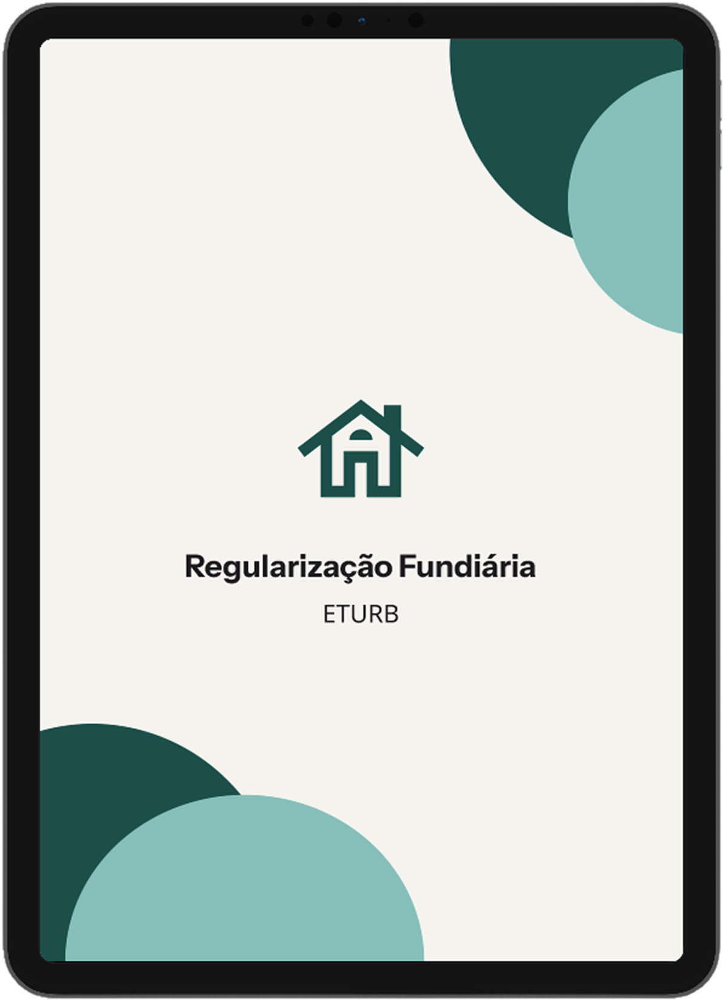
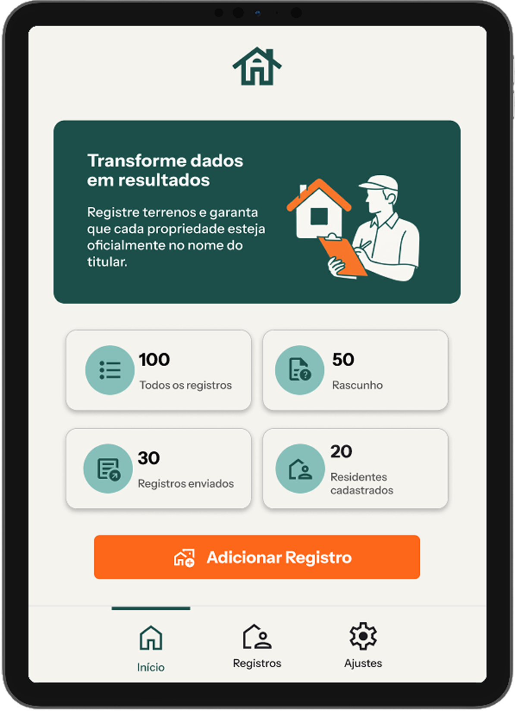

Projeto
Regularização
Fundiária
Projeto desenvolvido para facilitar processos de regularização fundiária, centralizando informações e tornando o acompanhamento de solicitações mais simples e eficiente.
A solução foi criada com foco em acessibilidade, organização e redução de burocracias. O sistema prioriza uma interface intuitiva e funcional, oferecendo uma experiência clara e confiável para usuários e órgãos públicos.

